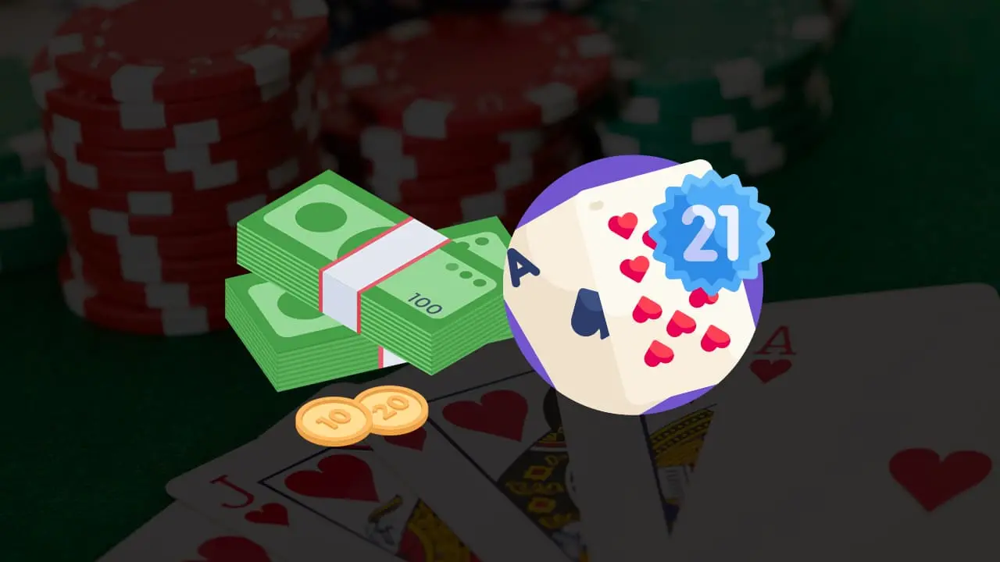

Eine blackjack-bankroll schritt für schritt aufbauen
Die Größe Ihrer Blackjack-Bankroll hat einen erheblichen Einfluss auf alles, was Sie im Casino tun. Von der Zeit, die Sie an den Tischen verbringen können, bis hin zur Höhe Ihrer Einsätze. Natürlich möchten Sie schon allein aus diesem Grund eine möglichst große Bankroll haben. Viele Glücksspieler haben jedoch Probleme damit, eine gesunde Bankroll aufzubauen und zu erhalten. In diesem Artikel erfahren Sie daher, wie Sie Ihre Blackjack-Bankroll gesund halten und aufbauen können.
Lernen sie eine grundlegende strategie
Das Erlernen und Umsetzen einer grundlegenden Blackjack-Strategie ist eine der einfachsten und sichersten Methoden, um Ihre Blackjack-Bankroll auf die nächste Stufe zu bringen.
Sie brauchen die Strategie nicht einmal auswendig zu lernen. Sie können sich in jedem Casino mit einer Strategiekarte in der Hand hinsetzen und nach Lust und Laune spielen.
Die meisten Kasinos bieten die „Spickzettel“ sogar im Geschenkeladen zum Verkauf an. Wenn Sie die Grundstrategie anwenden, sinkt der Hausvorteil bei 100 % der von Ihnen gespielten Blätter auf weniger als 1 %.
Das sind die besten Gewinnchancen , die Sie in fast jedem Casino finden können. Selbst wenn Sie also nicht jedes Blatt gewinnen, sollten Sie bei perfekter Umsetzung der Grundstrategie lange genug im Spiel bleiben. Um eine gesunde Bankroll zu erreichen, nehmen Sie Ihre Gewinne und verwenden Sie sie, um Ihre Bankroll zu erhöhen.
Niemals eine versicherungswette annehmen
Es kann verlockend sein, die Versicherungswette anzunehmen, wenn der Geber ein Ass bringt. Schließlich bietet Ihnen das Casino einen Ausweg, um nicht Ihren gesamten Einsatz zu verlieren. Aber leider ist das nicht ganz der Fall. Wenn das Casino mit der Versicherungswette kein Geld verdienen würde, würde es sie nicht anbieten.
Die Versicherung scheint eine solide Möglichkeit zu sein, Ihren Einsatz abzusichern. Aber denken Sie daran, dass die Versicherung nur dann zahlt, wenn der Dealer tatsächlich einen Blackjack hat. Sie können also auch die Versicherungswette platzieren und trotzdem das Blatt verlieren.
Es ist sogar wahrscheinlicher, dass der Geber KEINEN Blackjack hat als dass er einen hat. Aus diesem Grund ist der Kauf einer Versicherung am Blackjack-Tisch ein absoluter Fehlkauf, den Sie niemals tätigen sollten.
Vermeiden sie die verwendung des martingale-systems
Es gibt eine große Anzahl von Wettsystemen für Blackjack. Eines der am weitesten verbreiteten ist das Martingale-System. Diese Strategien ermutigen Sie dazu, den Einsatz auf der Grundlage des vorherigen Blattes zu erhöhen oder zu verringern.
Diese Systeme sind naturgemäß nicht narrensicher. Blackjack ist ein Spiel, bei dem man durch Geschicklichkeit seine Chancen erhöhen kann, aber im Grunde bleibt es ein Glücksspiel. Es ist nicht wahrscheinlicher, dass Sie in der nächsten Runde einen Blackjack bekommen.
Wenn Sie ein Weltklasse-Kartenzähler sind, wissen Sie natürlich, dass es manchmal klug ist, Ihren Einsatz zu erhöhen. Leider sind die meisten Spieler keine Weltklasse-Kartenzähler.
Ihre Blackjack-Bankroll erhöhen
Halten Sie sich an gleichbleibende Einsatzhöhen. Wenn Sie am Tisch sitzen und sehen, wie ein Spieler ein Blatt verliert und seinen Einsatz verdoppelt, um zu gewinnen, wissen Sie, dass seine Zeit am Tisch nur von kurzer Dauer sein wird.
Einige Spieler verwenden sogar eine grundlegende und diese Art von progressiver Strategie . Damit haben sie vielleicht ein paar Erfolge, aber am Ende ziehen sie einfach den Kürzeren.
Sie werden zwangsläufig einmal eine Pechsträhne haben und dann ihre gesamte oder einen großen Teil ihrer Bankroll verspielen. Und damit sind auch alle bis dahin erzielten Gewinne sofort wieder weg. Die Vermeidung unterschiedlicher Einsatzhöhen ist eine einfache und wirksame Methode, um Ihre Blackjack-Bankroll zu schützen.
Bei zehn immer verdoppeln steigert Ihre Blackjack-Bankroll
Wenn Sie mit einer Strategiekarte spielen, sollten Sie dies immer tun. Aber nur in bestimmten Situationen. Verdoppeln Sie zum Beispiel immer auf 10, wenn die offene Karte des Dealers 9 oder niedriger ist. Das liegt daran, dass die Chancen dann statistisch gesehen zu Ihren Gunsten stehen.
Sie sollten nur dann nicht auf 10 verdoppeln, wenn die Upcard des Dealers höher als neun ist. Verdoppeln Sie immer auf 10, wenn die offene Karte des Dealers 9 oder niedriger ist. Indem Sie diese Einsätze verdoppeln, machen Sie einen Teil der verlorenen Hände wieder wett. Aber auch diese Situationen bieten natürlich keine Garantie.
Mit dieser Strategie können Sie auch einfach ein Paar hintereinander verlieren. Lassen Sie sich in diesem Fall jedoch nicht entmutigen und setzen Sie Ihre Strategie fort. Lassen Sie sich nicht entmutigen, wenn gute Entscheidungen trotzdem zu Verlusten führen. Tun Sie weiterhin, was Sie tun müssen, und die Mathematik wird den Rest erledigen. Ruhe zu bewahren und sich an die grundlegende Strategie zu halten, wird den Unterschied zwischen dem Erhalt der Bankroll und dem Verlust der Bankroll ausmachen.
Fallen sie nicht auf den Gambler’s Fallacy herein
Die Gambler’s Fallacy ist der Irrglaube, dass vergangene Ergebnisse auf zukünftige Ergebnisse schließen lassen. Und das ist leider nicht der Fall. Den Karten ist es egal, ob Sie 15 Hände hintereinander gewonnen oder 100 verloren haben.
Das Kasino und das Kartenspiel schulden Ihnen nichts, weil Sie ein paar Hände hintereinander verloren haben. Die Karten sind weitgehend zufällig, und das Universum hat sich in keiner Weise gegen Sie verschworen.
Es gibt Spieler, die in Folge gewinnen, und gleichzeitig gibt es Spieler, die als Verlierer geboren zu sein scheinen. In beiden Fällen gibt es nichts außer Pech und Glück.
Die glücklichen Spieler beginnen, ihre Einsätze zu verdoppeln und manchmal sogar zu verdreifachen. Irgendwann gleichen sich die Zahlen aus und die Verluste häufen sich. Vor allem, wenn sie nicht rechtzeitig aufhören.
In diesem Fall kann man manchmal beobachten, wie Spieler auf unerklärliche Weise ihre Einsätze noch weiter erhöhen. Diese Leute haben wahrscheinlich keine Ahnung, wie der Hausvorteil dafür sorgt, dass selbst diese erhöhten Einsätze wieder zu Verlusten führen.
Es scheint kontraintuitiv zu sein, seinen Einsatz zu erhöhen, wenn man gewinnt, und ihn dann zu verdoppeln, wenn man zu verlieren beginnt. Halten Sie sich von dieser Art von trügerischen Überlegungen fern. Spielen Sie mit gleichmäßigen Einsätzen. Halten Sie Ihren Einsatz während der gesamten Spielsitzung gleich hoch. Ihr Guthaben wird viel gesünder sein und langsam wachsen.